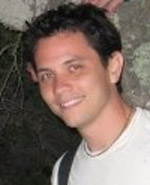

Quentin Gee, PhD
Areas of Study
- Ethics
- Political Philosophy
- Applied Ethics
- Metaphysics
Contact
Research Abstract
I graduated from California State University Bakersfield in 2003, with a BA in Philosophy, with minors in Linguistics and Political Science. While there, I had an emphasis in Aesthetics, taking three courses on the topic. I then went to a terminal Master’s program at Western Michigan University (Kalamazoo), graduating in 2005, with an emphasis in Metaphysics. While there I became more interested in Anti-Realism, Modal Skepticism, the A-Theory of Time, the History and Philosophy of Science, and Ethics. I then went to teach at Delta College (near Saginaw, Michigan) for one year, and further developed my interests in applied ethics, especially business, environmental and biomedical ethics.
My studies at UCSB began in 2006, where I’ve pursued several issues, including compatibilism, political philosophy, philosophy of law, and ethics.
My current research concerns the question of collective responsibility. I am interested the topic’s relation to ethical, political and legal philosophy. I also still have interests in metaphysics, applied ethics (environmental, business, technological), and the history of philosophy (Aristotle, Hobbes, Hume, Nietzsche).
I do a fair amount of work (some research, Teaching and Assistant Teaching) with the Environmental Studies Program here at UCSB. In particular, I’ve worked with Mel Manalis (Energy, Mathematics) and Mike McGinnis (Environmental Ethics). It has been a very rewarding experience working with both of them, including the philosophical angle.
Personal
I’m interested in many other topics, including science, computers, environment, energy, history, economics, and politics.
I also like like hiking, biking, beer, video games, and donuts (the first two even out the last two, and beer is a neutralizer of any rounding errors).
Music: Braindance, Jazz, Krautrock, Ambient, and other stuff.
Art: Banksy, Cubism
“When politicians are beholden to their constituents for essential campaign funds, and a very unequal distribution of income and wealth obtains in the background culture, with the great wealth being in the control of corporate economic power, is it any wonder that congressional legislation is, in effect, written by lobbyists, and Congress becomes a bargaining chamber in which laws are bought and sold?” — John Rawls, The Law of Peoples